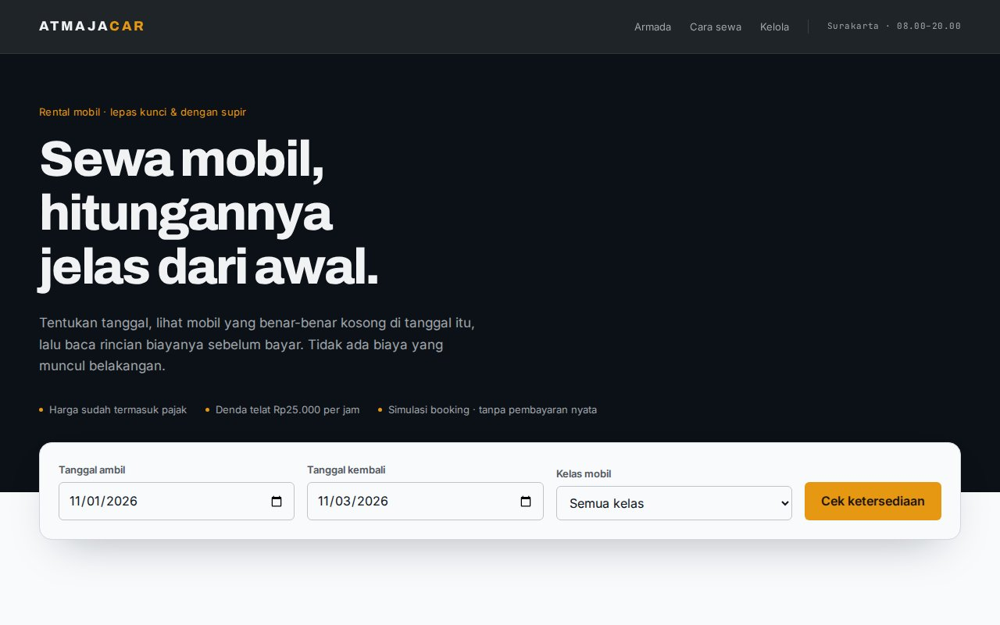
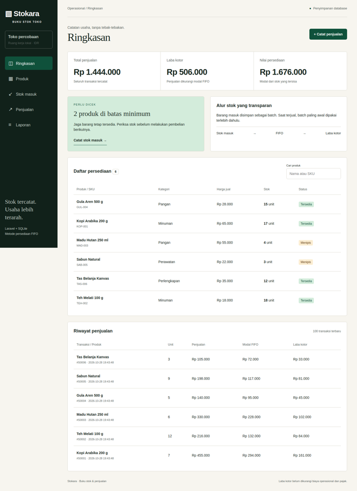

Frontend · Booking flow
AtmajaCar
From date selection to a clear cost breakdown. A car rental prototype that makes availability rules and pricing easier to understand.
Browser-based simulation. No real bookings or payments.
Open to internships and projects
Web developer — Laravel, JavaScript, and data
Building web applications around testable logic: precise rounding, conflict-aware scheduling, and persistent data. Information Technology undergraduate at STMIK AMIKOM Surakarta.
Ideas you can explore in action.

Frontend · Booking flow
From date selection to a clear cost breakdown. A car rental prototype that makes availability rules and pricing easier to understand.
Browser-based simulation. No real bookings or payments.

Backend · Laravel & SQLite
Track inventory, costs, and gross profit through purchase batches and FIFO cost allocation.
Local prototype. Setup instructions are available in the repository.
Explore how each application works, the engineering decisions behind it, and its limitations in the repository.
Visit GitHub ↗I'm Atmaja Desna Adinata, an undergraduate studying Information Technology at STMIK AMIKOM Surakarta. I am interested in web development, data processing, and using technology to solve everyday problems.
I learn best by building things, not just watching tutorials. Every project here comes from hands-on practice, whether it started as coursework or a problem I encountered myself.
I focus on more than visuals. I want applications with logic I can explain and verify — from monetary rounding that adds up to schedules and date ranges that flag conflicts.
If I cannot explain the calculation without opening the code, the work is not finished.
Identify what is being calculated, where the inputs come from, and what makes a result invalid.
Calculate interest, tax, and rounding independently, then compare the results with the application output.
Check readability and layout at 320 pixels before refining larger screens.
Laravel, automated testing, and data visualization.
Technologies and tools I use to learn and build.
HTML, CSS, and JavaScript for responsive, well-structured interfaces.
Programming fundamentals, data processing, and small automation tasks.
Turning raw data into clear, readable charts.
Version control with Git, Linux fundamentals, and working on servers.
Projects built to learn by doing and explore practical problems.
An inventory and sales ledger for small businesses, with purchase batches, suppliers, low-stock alerts, and cost and gross profit calculations using FIFO. Database transactions reject sales that exceed available stock. Tested with 8 tests and 23 assertions; runs locally, with no public demo.
A digital wallet demo with top-ups, transfers, simulated QRIS payments, and transaction history. Amounts are validated, balances cannot go negative, and transactions require
PIN confirmation. The interface follows the owner’s Figma design. Balances are stored in localStorage — a simulation, not real money.
A responsive personal portfolio built from scratch without a framework, with light and dark themes, scroll animations, and mobile navigation.
View code
A task tracker with deadlines, priorities, and a progress bar. Data is saved in the browser using localStorage, so it persists after the page is closed.
A calculator with keyboard support and calculation history. Its custom calculation engine avoids eval() — and has passed 19 test cases.
Ten interactive questions on HTML, CSS, and JavaScript, randomized each session, with immediate explanations and a complete review at the end.
Open appRecord course grades and calculate a credit-weighted semester GPA, with grade classifications and a grading reference.
Open app
Check current weather and a seven-day forecast for cities worldwide. Fetches data from the Open-Meteo API using fetch and
async/await.
A web application for managing customers and pawned items, built with Laravel 12 and PHP. Features two user roles, CRUD operations, photo uploads, and summary reports, with access boundaries enforced through middleware.
A loan management prototype with a multi-term installment calculator. Configurable interest rates of 0.5–3% per month are supported, alongside annual effective interest estimates, daily penalties, and pre-application simulations. Built with Laravel 12, two user roles, and middleware-based access control.
A classroom attendance prototype with six-character codes that rotate every 30 seconds, derived from a session key using HMAC-SHA256. A client-side experiment with time-limited codes, not a production guarantee against attendance fraud.
Split restaurant bills by individual orders. Tax and service charges are allocated proportionally, with rounding differences distributed using the largest remainder method so individual shares add up to the exact total.
A Monday-to-Saturday timetable with time and room conflict detection. Conflicting entries are highlighted, course credits are totaled automatically, and the grid becomes a daily agenda on smaller screens.
A car rental simulation with date-based availability checks: cars booked for overlapping dates cannot be selected. Includes itemized costs for drivers, pickup, insurance, and deposits, plus a booking management panel. No real bookings or payments.
Prayer times calculated from the sun’s position, rather than retrieved from an API. Times are estimates and should be checked against official local schedules. Includes audio adhan reminders, the Fajr-specific phrase, a Qibla compass, and a digital tasbih counter.
A browser-based 32×32 pixel editor with five drawing tools, 60-step history, and horizontal mirroring, plus a local gallery and crisp PNG exports. Uses Bresenham line drawing and stack-based flood fill. No libraries or server required.
A hospital workflow prototype for RS Atmaja Wonogiri (fictional): patient registration, clinic queues, a call board, medical records with ICD-10 diagnoses, pharmacy stock updates, and billing categories for BPJS, insurance, and self-paying patients. Screens share a single browser-side data source. Not a production medical system.
A promotional coffee shop website in Wonogiri with a paper-white and coffee-brown palette, Fraunces serif headings, and no shopping cart or ordering flow. Seven coffee menu entries each open a two- or three-photo gallery with touch swipe support, arrow buttons, dot navigation, and keyboard controls. Content focuses on the shop’s story, atmosphere, contact details, and location.
STMIK AMIKOM Surakarta
Studying web programming, databases, cloud computing, information security, and data visualization.
General education
Where my interest in computers and information technology began.
Open to conversations, project collaborations, and exchanging ideas about technology.